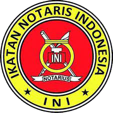

_page-0001.jpg)
_page-0002.jpg)
_page-0003.jpg)
_page-0004.jpg)
_page-0005.jpg)


PROFESIONAL EXPERIENCES

Notary Office MARTIAPRI YANTI, SH., M.Kn | Bukittinggi, Indonesia
May 2021 – April 2024 | Full Time
May 2021 – April 2024 | Full Time
- Mentored Notary team, boosting document accuracy and efficiency.
- Guided staff in deed creation, enhancing turnaround times.
- Trained employees in data input for government systems, ensuring compliance.
- Resolved complex issues, improving team productivity and client satisfaction.
Notary Office IRWANDI, SH., M.Kn | Agam, Indonesia
October 2018 – May 2023 | Full Time
October 2018 – May 2023 | Full Time
- Supported seamless contract and deed preparation, enhancing client satisfaction.
- Ensured document authenticity and identity verification for security compliance.
- Streamlined document registration, boosting operational efficiency by 20%.
- Facilitated client communication, improving case clarity and engagement rates.
PT.ANUGERAH MULTIJAYA PERSADA | Batam, Indonesia
February 2016 – February 2017 | Full Time
February 2016 – February 2017 | Full Time
- Executed NDT inspections, ensuring compliance with project standards and specifications.
- Calibrated and maintained NDT equipment, optimizing reliability and functionality.
- Analyzed inspection data to detect defects, enhancing safety and structural integrity.
- Prepared detailed reports, summarizing inspection results to meet client expectations.